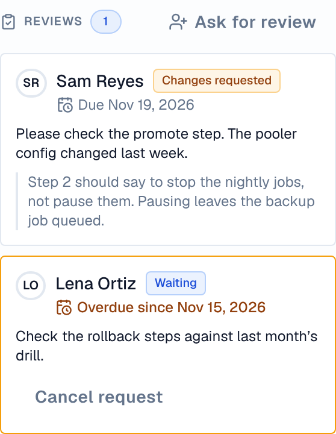
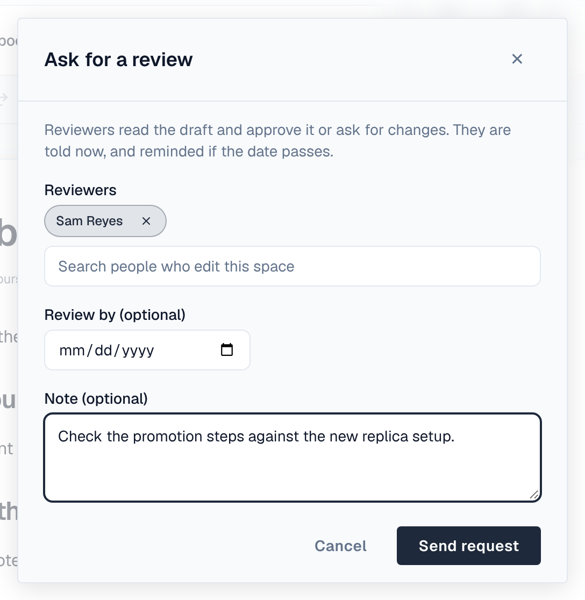

1. Overview
A review request asks people who edit the space to read a page's draft and approve it or ask for changes. Reviews live in Reviews, in the editor's Page details: only people who can edit pages in the space see and answer them.

2. Ask for a review
- Open the page and find Reviews — In Page details, beside the page.
- Select Ask for review — Search people who edit this space and pick up to 10. You can't ask yourself.
- Add a note and a date (both optional) — What the reviewer should look at, and Review by: a day up to a year ahead.
- Select Send request — Each reviewer gets an alert now, and another if the date passes before they answer.

Asking for a review needs permission to see people in the space, because it names them. You can't ask the same person twice while their request is open; Cancel request withdraws one (nobody is told).
3. Answer a request
When you are asked, open the page from the alert. Your request shows Approve and Ask for changes:
- Approve with an optional note.
- Ask for changes with a note that says what should change.
The person who asked gets an alert either way. Requests show Waiting, Approved, Changes requested or Cancelled, with Due or Overdue since and a date. An answer given before the page was last published is marked Given before the last publish: it was about an earlier draft.
Your administrators can require an approval before a page is published, with a policy. Each reviewer counts once, by their latest answer since the last publish.
4. On the calendar
Open requests show on the calendar on the day they are due, as Review due.
5. Review-by dates
A review-by date is a reminder that a page should be checked again by a certain day, so it doesn't go stale. Under Plans in Page details, Set a review-by date picks a day up to five years ahead; Change the date and Remove the date change it. When the day comes, the person who set it gets an alert. Review-by dates show on the calendar too, and readers see a published page's date there.
Pages nobody has published in 180 days also show in content health.